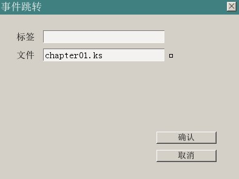

在吉里吉里/KAG游戏里，剧情脚本的扩展名是.ks，放在Data/scenario目录下。
在之前的几章里我们已经知道如何使用脚本编辑器来打开剧情脚本，并且往里面添加内容例如显示背景、显示人物、播放音乐等。
不过，想象一下，如果一个文本量几十万的游戏，从头到尾就只写在一个文件里，那这个文件该有多少行……
所以为了方便管理，通常会按照剧情段落把内容分成多个脚本文件。假设是电子小说，就用“第几章”来表示吧。
以下是一个有6章（加上序章7章）的电子小说的脚本文件。
执行的顺序应该是：
prelogue.ks->chapter01.ks->chapter02.ks……->end.ks
——你说你的scenario里没有这么多文件？
自己新建几个就可以了嘛……
scenario文件夹下的脚本可以有无数个，吉里吉里并不知道你在prelogue.ks过后应该执行的是什么脚本。是“第一章.ks”呢，还是“chapter01.ks”或者“这就完了.ks”？
你需要做的是在序章的脚本执行完以后，告诉游戏接下来应该做什么。
这时候要用到的就是“跳转”功能了。
点击13行（到达文件末端），跳出我们熟悉的指令窗口：
蓝色线框住的地方，戳下去！
打开了要求填写具体参数的页面。
既然是跳转到下一个脚本，当然是要填写文件名。
同样文件名可以自己手动填写，或者……
蓝色线框住的地方，再戳下去！
参数填好了，接下来就是确认然后执行测试了~

再仔细看一下上图，可以填写的参数除了“文件”，还有“标签”。
已经知道了文件就是要跳转到的剧情文件名，那么标签又是什么？
简单的说，标签就是个定位用的标记。
在剧情脚本里某个段落的开头插入标签的话，就可以很方便地从其他地方跳转到这个段落。
如上图，打开一个新建的剧情脚本文件，例如chapter01.ks。
新建脚本的时候，THE NVL Maker会默认添加开头的几行。
除了开头3行用注释;标明了文件名以外，第4行就是一个名叫*start的标签。
在KAG里，以星号“*”开头的一行，会被视为标签。
现在戳一下第4行，下面的窗口打开了。
随便改改名，但别忘记开头那个*号。（虽然假如你忘记了就点确认的话，NVL也会自动帮你加上的……）
如上图，还有一个没有勾选的项目那就是“作为可存档标签”。
这个选项会在“保存游戏”的时候发挥作用。
比如，勾选标签设定里的“作为可存档标签”，并在“章节名”处填写“第一章”。
点下确认并保存脚本。
之后，在游戏执行到这里的时候，玩家“保存游戏”，就可以看到游戏档案里显示着“第一章”的字样。
总之，这里可以用来填写各式各样的信息。例如“X月X日”“进入的是谁的角色路线”等等。
除了固定的文字之外，你也可以填入变数。
例如填写&f.abc（&用来取得变数值）的时候，保存游戏里，记录的就是变数f.abc的值。
和“脚本文件”一样，标签也可以作为跳转的目的地。
例如你要从prelogue.ks里直接跳转到chapter01.ks的“第二节”而不是“第一节”处，
就可以在chapter01.ks里创建一个叫“*第二节”的标签，然后把prelogue.ks结尾的“事件跳转”指令修改成这样：
那么，游戏进行的时候，就会在执行完序章以后，接着执行第一章第二节的内容，而把整个第一节的内容跳过去。
对并非单线执行的电子小说，这个功能是必须的。可以根据条件，判断执行或不执行某个段落的内容。
例如一个游戏进行到某个时候，会跳出三个选择：
玩家选择进入房间1，则执行第一章第一节，
进入房间2，则是第二节，
假如不进入任何房间而是直接回到大厅，那么就跳过整个第一章，直接进入第二章等等……